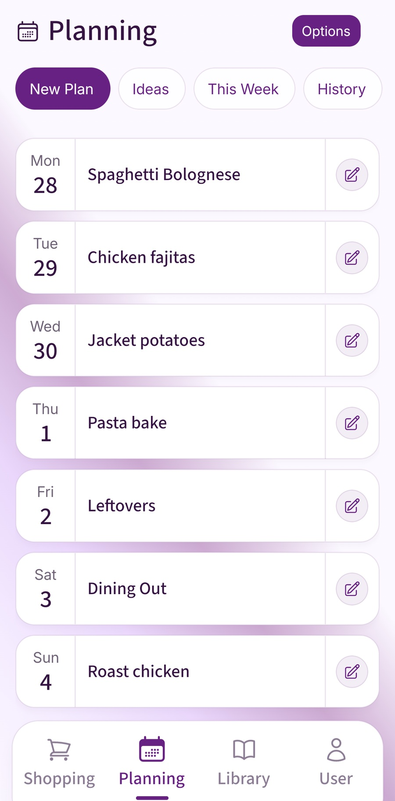

Start with the evenings you have the least time to cook. Put an easy dinner there, plan around ingredients that need using, and leave room to move a meal. This guide focuses on adapting a weekly meal plan when work, school, or other commitments change.
Start with the week you actually have
The most useful weekly meal plan starts before you choose a single dinner. Look at the real shape of the week first. Which evening has a late finish? Which night has football, swimming, dance, Scouts, Brownies, parents' evening, a train that often runs late? Those nights need easy food, not wishful thinking.
A normal UK week rarely gives you seven calm cooking windows. Planning as if every night is a slow Sunday is where the plan starts to break. Mark the awkward evenings, then decide what kind of meal each night can realistically carry.
Mark the fixed points first
Add late shifts, school clubs, nursery pick-ups, travel days, exercise classes, food delivery days, and the evening you know you will be too tired to cook properly.
Give each evening an effort level
Use simple labels: normal cook, quick dinner, leftovers, freezer meal, or flexible night. This matters more than choosing the exact recipe immediately.
Choose meals that match those labels
Put lasagne, curry, roast chicken, or chilli on the evenings with enough space. Use jacket potatoes, fajitas, pasta, omelettes, or freezer portions for tighter nights.
Use a flexible weekly shape
Instead of trying to invent seven fresh ideas, use a shape that repeats. Repetition is not a failure. It is what makes the plan quicker to build and easier to shop for.
A good starting shape for a busy household is three normal dinners, two quick dinners, one leftover or freezer night, and one flexible night. The flexible night might become a simple tea, a meal out, a takeaway, a fridge-clear dinner, or the meal you moved from Tuesday when Tuesday fell apart.
For example, a realistic week might be roast chicken on Sunday, spaghetti bolognese on Monday, chicken fajitas on Tuesday, jacket potatoes on Wednesday, pasta bake on Thursday, leftovers on Friday, and a flexible Saturday. That gives the week enough structure without pretending nothing will change.
Plan backups before you need them
Backup meals are not the same as emergency snacks. They are proper, low-friction dinners that can replace the plan without sending someone back to the supermarket. Good backups are meals you already accept as normal food, not meals that feel like giving up.
Keep two or three options in mind. Beans on toast, filled jacket potatoes, eggs, frozen veg with noodles, pasta and sauce, soup and bread, or a freezer portion of chilli can all protect the week. The best backup is boring in the right way: easy to cook, easy to shop for, and familiar enough that nobody has to debate it.
Use this template: a weekly meal plan that bends
Copy this into a note, print it, or use it as your planning prompt before you write the food shop.
- Before choosing meals: What nights are late, busy, or uncertain?
- Food to use first: What is already in the fridge, freezer, or cupboard?
- Normal cook nights: Choose 2 or 3 meals with enough time to cook properly.
- Quick dinner nights: Choose 2 meals that can be cooked with low effort.
- Leftover or freezer night: Pick one night that does not need new cooking.
- Flexible night: Leave one slot that can move, become leftovers, or absorb a changed plan.
- Fallback meals: Keep 2 simple options ready in case a planned meal stops making sense.
- Shopping check: Turn every meal into ingredients, combine duplicates, then add regular household items.
Turn the plan into the food shop
A meal plan only starts saving time when it becomes a useful shopping list. Write the meals down, then list what each one needs. Combine duplicates as you go. If chicken curry and fajitas both need chicken, the list should show the total amount you need, not two separate scraps of memory.
Check the kitchen before buying the obvious things. Rice, pasta, gravy, curry paste, passata, garlic, wraps, butter, and cheese are exactly the sort of items people buy twice because they were not sure what was already there. After the meal ingredients are done, add the non-meal regulars: bread, milk, cereal, fruit, kitchen roll, washing tablets, toothpaste, pet food, or whatever your household runs through every week.
This is also where flexibility helps. If a dinner may move from Tuesday to Thursday, the ingredients can still be bought once. The plan is there to guide the shop, not to make the week feel like a timetable.
Where Fameally fits into this routine

The practical job is the same whether you use paper, notes, or an app: choose meals, connect them to ingredients, and keep the shop clear. Fameally helps by keeping saved meals in one place, letting you add them to the week, and turning the ingredients into an organised shopping list. Food, cleaning, toiletry, and general items can stay separate, which makes the final shop easier to scan.
If your week repeats, saved meal plans and weekly regulars can make the next plan faster. If your household shares planning, a family workspace can keep meals, plans, and lists in sync rather than spread across messages.
Keep the plan easy to change
The final habit is to treat the plan as a set of options, not a promise. If Wednesday changes, move Wednesday's meal. If the chicken needs using sooner, bring it forward. If the evening becomes too much, use a fallback and keep the planned meal for tomorrow.
A weekly meal plan that survives real life usually has fewer decisions, fewer fragile meals, and more permission to adjust. That is what makes it useful. You are not trying to prove you can forecast the week perfectly. You are trying to make dinner and shopping less dependent on memory at the worst possible moment.
When Thursday’s plan changes
If Thursday’s dinner moves to Friday, check which ingredients need using sooner and whether Friday’s original meal can wait. Update the shopping list before buying more. An unopened cupboard ingredient can usually stay on the plan longer than fresh food: follow storage instructions and use-by dates.
FAQ
- How do I make a weekly meal plan I can stick to?
- Start with your real diary, not the meals. Mark the busiest evenings, choose meals by effort level, and include two fallback dinners. A plan is easier to stick to when it expects some movement.
- What should a family weekly meal plan include?
- Include normal dinners, quick dinners, leftovers, and one flexible slot. For many UK households, planning dinners first is enough. Breakfasts, lunches, snacks, and packed-lunch items can then be added as regular shopping items.
- Should I meal plan before writing a shopping list?
- Yes. Choose the meals first, list their ingredients, combine duplicates, check what you already have, then add household essentials. That gives you a shopping list that matches the week.
- How many backup meals should I keep?
- Two or three is usually enough. Pick meals that are cheap, familiar, and easy to keep in the cupboard or freezer, such as pasta and sauce, jacket potatoes, soup and bread, eggs, or a frozen portion from a previous meal.
- Is a weekly meal plan worth it if plans always change?
- Yes, as long as the plan is flexible. Even when meals move, the planning work still helps you shop once, use food you already have, and avoid starting every evening from a blank page.
Keep planning
These guides cover the next steps: making the routine easier for a busy family and turning the plan into a shop.
Plan the week in Fameally.
Download Fameally to plan meals, generate the food shop, and keep the weekly routine calmer.